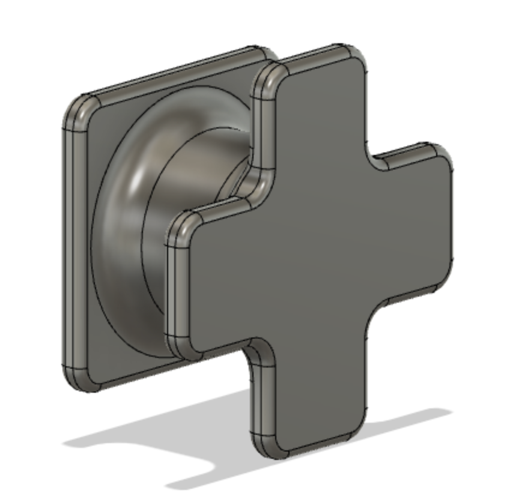

Skjöldur
Verkefnið teiknað upp
Við hittumst á zoom, 24.mars og sóttum forritið VCarve. Við fundum mynd af hogwarts merkinu, notuðum trace bitmap til að teikna útlínurnar á viðinn. Við teiknuðum kassa í kringum merkið og stilltum svo toolpath og vcarve. Þar sem við vorum ekki með á hreinu hvernig efni við værum að vinna með og hvernig bita þá stilltum við á fyrirfram ákveðna End Mill og V-Carve bita. Við ákváðum að best væri að stilla þá betur þegar komið væri upp í Fablab. Við settum þykktina einnig sem 15mm þar sem þykkt á efninu var óþekkt og höfðum það í huga að endurskoða þyrfti hana þegar komið væri upp í Fablab.
Toolpaths
Preview af verkefni
Toolpaths endurstillt
Þá var ferðinni heitið í FabLab í Breiðholti þar sem undirbúningur fyrir fræsingu var kláraður og fræsing átti sér loks stað. Við byrjuðum á því að setjast niður með Hafliða og taka lokaákvarðarnir varðandi það hvernig tól (tool) ætti að nota hvar og hvers vegna. Þá voru stillingar á snúningi tólanna einnig fínstilltar með hjálp Hafliða. Við komumst þar að því að V-carve tólið hentar ekki þar sem langt er á milli lína (á stór svæði), hætta hefði verið á að tólið hefði skorið efni í burt þar sem við vildum ekki gera það ef við hefðum haldið okkur við v-carve tólið alls staðar. Við skoðuðum þann valmöguleika að láta v-carve tólið skera einungis út útlínur, og ekkert innan úr, en okkur þótti það ekki líta nógu vel út. Því ákváðum við að búa til annað toolpath til hliðar við v-carve toolpath-ið. V-carve tólið var því fengið til að skera út þau svæði sem ekki var langt á milli og 6 mm flat head tól notað til að taka innan úr þeim svæðum.
Stillingar á toolpaths
Preview af bara útlínum skornum út
Preview af bara V-Carve

Preview af bara því sem bitinn sker fyrir V-Carve
Preview af öllum toolpaths
Stilling á fræsi og viður valinn
Þegar þessu var lokið þurftum við þá að velja okkur efni. Þar sem skjöldurinn þarf í rauninni ekki að vera sterkur ákváðum við að velja 12mm þykkan grenikrossvið, þar sem nóg var til af honum og hann nokkuð mjúkur í skurði. Við lögðum krossviðinn niður og boruðum hann fastann svo að hann færi nú ekki á flakk og lægi flatur á meðan á skurði stæði. Þá færðum við fræsifælinn úr tölvunni hennar Ragnheiðar yfir í tölvuna við fræsinn í fablab. Næst festum við v-carve bitann okkar í fræsinn og núllstilltum x og y staðsetningar þannig að við myndum nú spara sem mest af efni. Næst tók við að láta fræsinn ákvarða z staðsetningu en til þess notuðum við plötu sem er á fræsinum. Við þetta tókum við eftir að platan lægi ekki alveg flöt við alls staðar heldur afmyndaðist aðeins um miðju. Til að sporna við þessu á meðan z staðsetning var ákveðin héldum við plötunni einfaldlega niðri á meðan fræsirinn gerði sitt. Í framhaldi af þessu gerðum við svo toolpath fyrir 3 punkta þar sem við gátum borað plötuna fasta niður fyrir miðju án þess að skarast á við skurð á merkinu sjálfu og fræstum 1mm niður fyrir þessum þremur punktum. Þá var borað á þessum þremur stöðum svo að platan lægi flöt.
Skjöldurinn fræstur
Áður en skurður hófst þurfti að hita upp spindilinn þar sem betra er að hafa hann í stöðugu hitastigi við skurð (svo hann sé ekki að tútna út eða skreppa saman). Þetta tók nokkrar mínútur og við biðum bara rólegar á meðan með öryggisgleraugun upp sett og hárið í teygjum. Eftir það gátum við loks byrjað að fræsa skjöldinn. Við byrjuðum á að fræsa v-carve toolpath-ið sem tók dágóðan tíma, eða um það bil 1 klst og 45 mín, enda mikið um smáatriði sem þurfti að fræsa með þeim bita. Eftir að því lauk var svo skipti yfir í 6mm flata bitann og toolpath fyrir hann fræst út. Þetta tók mun styttri tíma, eða undir 15 mín. Önnur okkar var inni allan tímann sem fræsing átti sér stað og var tilbúin til að ýta á biltakkann/ýta á STOP takkann ef eitthvað skyldi fara úrskeiðis. Ef það er gert klárar fræsirinn að fræsa þann vektor sem hann er að fræsa og hættir svo. Þá er hægt að halda áfram strax ef allt er með felldu. Einnig voru tveir öryggistakkar sem á mátti ýta aðeins og einungis ef eitthvað mikið færi úrskeiðis. Sem betur fer kom ekki til þess.
Skjöldur 1 fræstur
Skjöldur 2 fræstur
Eftir fræsingu
Eftir að fræsingu á skildinum lauk þurfti að losa skildina upp úr efninu sem notað var til að skera þá út, með hamri og meitli. Auk þess þurfti að losa plötuna sem við notuðum til að skera úr með því að losa allar skrúfurnar sem við höfðum skrúfað í hana til að halda henni á réttum stað og að sjálfsögðu ryksuguðum við plötuna, skjöldinn og allt í kring. Því næst sönduðum við niður festipunktana við plöturnar sem og allt það ljóta sem við gátum sandað í burtu á skjöldunum. Útkoman var nokkuð góð en þó eru nokkrir staðir sem brotanði upp úr skildinum við fræsingu. Þetta kom líklegast til vegna þess hve stutt bil er á milli hárra útlína á nokkrum stöðum, en útkoman hefði orðið betri ef við hefðum notað fínna efni sem brotnar minna úr. Næstu skref eru svo að mála skjöldinn (í sumar) og hengja upp á vegg!
Skjöldur fræstur og tilbúinn
Tenglar á okkar síður
Auk þess að skrá ferli verkefnisins á sameiginlega síðu skráðum við okkar hluta verkefnisins á okkar eigin síður og hér er tengill á þá síðu, Ragnheiður og Sara
Veggfesting
Markmið
Í verkefni 5 átti að framleiða fræst mót. Hluturinn sem framleiða átti með mótinu skyldi beintengjast fræsingunni í verkefni 4. Nú voru aðstæður þannig að ekki var hægt að framleiða mótið og nota það, en verkefninu var breytt þannig að alla aðra hluta verkefnisins en framleiðsluna skyldi framkvæma.
Nálgun og ákvörðun
Þegar þetta verkefni var hafið höfðum við ákveðið hvað við ætluðum að gera í verkefni 4 og ákváðum í framhaldi af því að fræsa mót fyrir veggfestingar svo að hægt væri að hengja skildina upp á vegg. Þá var hafist handa við að leita hugmynda á alnetinu, en þá “googluðum” við einfaldlega “simple wall mount”. Engin mjög fýsileg lausn kom upp fyrir okkar tilvik, en hugmyndir byrjuðu að myndast og við ákváðum að byrja að teikna í Fusion 360 (https://www.autodesk.com/campaigns/education/fusion-360).
Hönnun
Við byrjuðum á að teikna einfaldan kassa, þann hluta sem ætlaður er til að festa á vegg og extrude-a hann. Næst var sívalningur extrude-aður ofan á aðra hlið kassans og að lokum teiknað nokkuð einfalt form til að festa við skjöldinn sjálfann ofan á sívalninginn.

Ákveðið var að gera veggfestingarnar mjög litlar, þar sem þær þurfa ekki að hafa mikinn burð, skildirnir eru léttir, og hægt væri einfaldlega að hafa fleiri veggfestingar ef þess þarf. Auðvelt er þó að breyta stærðum á hlutnum, þar sem notaðar eru parametrískar breytur. Næst voru sett fillet á öll horn, bæði til að auðvelda fræsingu (ekki hægt að fræsa 90° horn með góðu móti) og til að styrkja. Hönnunin gerir að verkum að aðgengi að festingunni með bor er nokkuð auðveld. Við töldum ekki þarft að setja göt í mótið fyrir festinguna, en gerum því ráð fyrir að bora þurfi í gegn um þær eftirá. Einnig mun þurfa að bora í gegnum skjöldinn til að festa hann upp, en það þótti okkur allt í góðu.
Nú tók við hönnun á móti. Þá fórum við eftir leiðbeiningum úr tveimur myndböndum: myndband 1 og myndband 2 . Teiknaður var kassi og hann extrudaður þannig að hann næði alveg utan um festinguna. Þá var combine fítusinn notaður til að skera úr kassanum eftir festingunni, og kassanum skipt í tvennt þannig að hann yrði að tveimur hlutum. Bætt var hálfkúlum svo að mótið myndi passa vel saman, og gati til að sprauta efni inn í. Að lokum var mótunum svo raðað hlið við hlið.
Síðasta skref var svo endurtekið til að gera mót fyrir mótið.

Toolpaths
Þá tók við toolpath gerð. Þetta gekk brösulega fyrir sig en hvorug okkar hafði gert toolpath áður í Fusion. Til þessa nýttum við tvö myndbönd: myndband 1 og myndband 2, en einnig þessa síðu. Þetta fór aðallega fram með trial and error aðferðinni, við nýttum simulate fítusinn vel í fusion og hermdum eftir hverju toolpath á fætur öðru þar til við vorum sáttar með útkomuna. Auðvelt ætti að vera að pússa það sem eftir stendur. Ef til framleiðslu hefði komið hefðum við fengið kennara til að aðstoða við að laga til leiðirnar til að spara tíma eða betrumbæta útkomuna á annan hátt. Hér fyrir neðan er myndband af aðgerðum. Heildartími í fræsingu ætti að vera um 1klst og 20 mín samkvæmt Fusion.
Tenglar á okkar síður
Auk þess að skrá ferli verkefnisins á sameiginlega síðu skráðum við okkar hluta verkefnisins á okkar eigin síður og hér er tengill á þá síðu, Ragnheiður og Sara
Samantekt
Verkefnið valið
Nú var komið að fyrsta almennilega hópaverkefninu, að fræsa eitthvað stórt. Við vorum heldur hugmyndasnauðar til að byrja með og ákváðum því að leita að innblæstri á netinu. Við söfnuðum hugmyndum í doc skjal á netinu og fórum svo yfir hugmyndirnar hjá hvorri annarri. Þegar við komumst svo að því að við rákumst á þessa síðu urðum við báðar mjög spenntar. Við sáum að auðvelt væri að sameina þetta við verkefni 5, að fræsa og undirbúa mót þar sem skjöldurinn þyrfti góða veggfestingu sem hægt væri að búa til með þeim hætti. Við komumst að því að við erum báðar miklir Harry Potter aðdáendur og vorum báðar að hlusta á Harry Potter and the Order of the Phoenix svo örlögin ákváðu þetta fyrir okkur, verkefnin okkar munu vera í Harry Potter þema. Við vorum mjög spenntar að finna sameiginlegan áhuga og hið fullkomna verkefni fyrir Harry Potter nörda eins og okkur!
Verkefnaskipulag
Verkefnaskipulag og tímastjórnun ákváðum við að setja upp myndrænt í Microsoft Project.
Hönnunarvernd
Nú byggjum við helminginn af verkefninu okkar á hönnun annarra en okkar eigin, og því má áætla að við getum ekki sett neina hönnunarvernd á þann hluta. Nú gætum við hins vegar sett hönnunarvernd á veggfestinguna þar sem hún er hönnuð frá grunni. Þá þyrftum við hins vegar að gera almennilegar greiningar og niðurnjörva hvað það er sem við ætluðum að fá einkarétt á. Nú er framleiðsluaðferðin vel þekkt, svo varla væri hægt að fá hönnunarvernd á hana. Því er það í raun aðeins hönnunin sjálf sem við gætum sótt um hönnunarvernd á. Samkvæmt heimasíðu Hugverks þarf hönnunin að vera ný og sérstæð, þ.e. ótvírætt frábrugðin heildarmynd annarrar hönnunar, þ.e. hönnunar sem þegar er þekkt. Hægt er að reyna að ganga úr skugga um að hönnunin sé ný og sérstæð í leitarvél DesignView. Einnig er hægt að leita að einkaleyfum á Google Patents. Þessa hönnun þótti okkur þó ekki þarft að fá hönnunarvernd á, við tökum því bara fagnandi ef einhverjir vilja nýta hana, og því munu allar skrár sem notaðar voru í hönnunninni öllum aðgengilegar í gegn um opinbera vefsíðu okkar. Nokkuð ljóst er að hönnunin er gríðarlega einföld og því frekar tilgangslaust að sækja um einkaleyfi fyrir hana.
Öll hönnunarskjöl má finna hér.